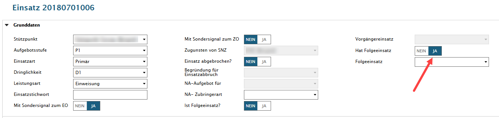

Hat Folgeeinsatz / Ist Folgeeinsatz
Für die Verknüpfung von aufeinanderfolgenden Einsätzen verwenden wir die Funktion 'Ist Folgeeinsatz / Hat Folgeeinsatz'. Dies bedingt natürlich, dass das Fahrzeug in den zwei Einsätzen übereinstimmt und die Einsatzzeit innerhalb von 24 Stunden liegt. Zudem müssen die Einsatzzeiten komplett erfasst worden sein.
Bedingungen
Hat Folgeeinsatz JA
Folgende Bedingungen gelten für Hat Folgeeinsatz:
gleiches Fahrzeug
Alarmzeit < betreffender Einsatz
Einsatzzeit innerhalb von 24 Stunden
Einsatz kann sich selber kein Folgeeinsatz sein
→ alle Einsätze, welche obigen Bedingungen entsprechen, werden in der Combobox Folgeeinsatz angezeigt
Ist Folgeeinsatz JA
Folgende Bedingungen gelten für Ist Folgeeinsatz:
gleiches Fahrzeug
Alarmzeit > betreffender Einsatz
Einsatzzeit innerhalb von 24 Stunden
Einsatz kann sich selber kein Folgeeinsatz sein
→ alle Einsätze, welche obigen Bedingungen entsprechen, werden in der Combobox Vorgängereinsatz angezeigt
Erfassen
Einsatz 20180701006 erstellen, unter Einsatz / Grunddaten den Slider bei 'Hat Folgeeinsatz' auf JA setzen.

Einsatz 20180701007 erstellen, unter Einsatz / Grunddaten den Slider bei 'Ist Folgeeinsatz' auf JA setzen
Combobox Vorgängereinsatz ist noch leer.
Beim Vorgänger-Einsatz 20180701006 den Folgeeinsatz aus der Combobox auswählen.
Beim Folge-Einsatz 20180701007 den Vorgängereinsatz aus der Combobox auswählen.